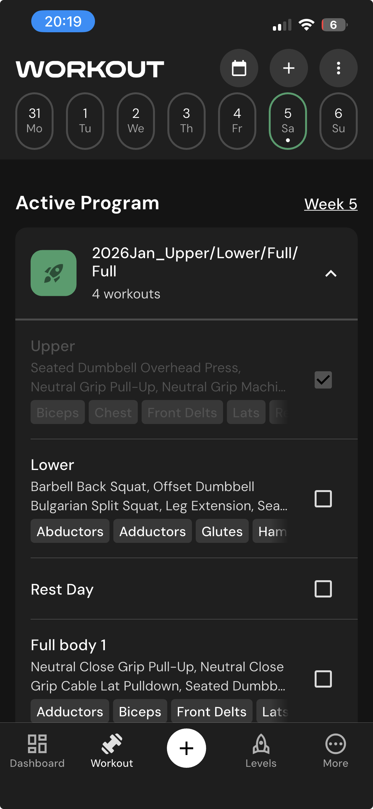

A private strength-training tracker that began as a spreadsheet and became a mobile web app. The public demo uses a copied workout dataset because the numbers are useful for testing realistic flows and I do not treat this training data as sensitive.

The tracker needed to support the way I actually train: planned sessions, substitutions, skipped work, previous performance, mesocycle progression, and enough structure to review patterns over time. Google Sheets was already the source of truth, but using the sheet directly on a phone was too slow and fiddly for the middle of a workout.
The production system is a private Google Sheet with Apps Script logic and a mobile-first web interface. The Sheet remains the database and review surface; the web app handles the workout flow, draft state, validation, completion, and recovery paths.
The shareable demo is generated separately as one standalone HTML file. It inlines the app shell, styles, shared workout engines and a mock backend, so people can try the interaction without touching the live Google Sheet or Apps Script deployment.
The demo intentionally includes realistic workout metrics. That makes testing more useful: the interface has to handle real session names, previous-performance values, substitutions, skipped work, and completion flows rather than toy examples.
Personal OS was mostly an information architecture problem: how to make context durable enough for AI collaboration. Workout Tracker was a product and workflow problem: how to make a private, real-data system usable in the moment, on a phone, while preserving the reliability of the underlying Sheet.